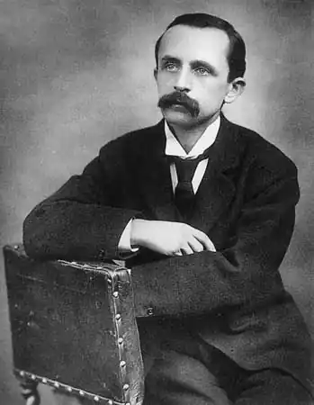
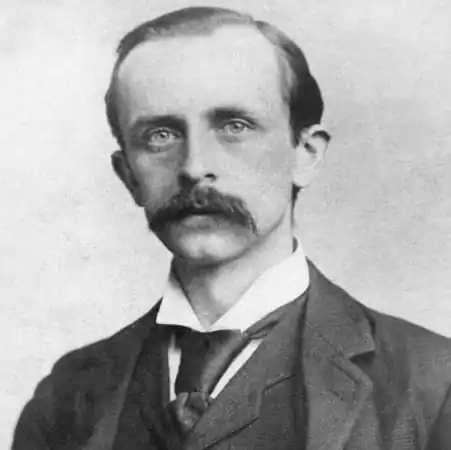

Джеймс Метью Баррі, автор "Пітера Пена", народився 9 травня 1860 р. у невеличкому містечку в Шотландії (Велика Британія) у родині простого ткача.Він був дев'ятою дитиною з десяти в родині простого ткача Девіда Баррі. Мати, Маргарет Огілві, яка зберегла, за звичаєм багатьох шотландських сімей того часу, своє дівоче прізвище, була обдарованою жінкою − прекрасно співала пісні рідної Шотландії, пам'ятала численні легенди і народні сказання. Вона прищепила дітям любов до рідного фольклору і виховала у них почуття незалежності.
Родина Баррі жила бідно, багато в чому собі відмовляючи, щоб здійснити заповітну мрію – дати освіту синам. Старший брат Олександр, отримавши нарешті посаду викладача у Глазго, взяв на себе турботи про подальшу освіту Джеймса. З його допомогою Джеймс закінчив школу, прослухав підготовчий курс в академії Дамфріс, після чого був зарахований до Единбурзького університету, який закінчив у 1882 році. Після закінчення навчання він у 1883–1884 роках працював музичним критиком у редакції газети "Ноттінгем Джорнел". Як журналіст також активно співпрацював з "Edinburgh Evening Dispatch", "British Weekly" та іншими виданнями. У 1885 році Баррі переїхав до Лондона, де прожив до кінця своїх днів. Визнання як журналіста прийшло до Баррі після опублікування серії нарисів, у яких зображалось життя маленького містечка в першій половині XIX ст. У 1888 році на основі цих нарисів виходить його книга "Ідилії Старих Вогнів" ("Auld Licht Idylls"), проте життя, описане у цій книзі, було далеко не ідилічним. Злидні, пуританська вузькість поглядів, втручання церкви в особисте життя – таким зображає Баррі вигадане містечко Трамз, прототипом якого слугувало його рідне місто Кіррімьюре. Трамз згодом став місцем дії ще двох романів письменника. У 1889 році також виходить роман з життя журналістів "Коли людина сама".
Упродовж 15 років (1885–1900) Баррі займався літературною діяльністю. У цей час написані такі твори: невдала мелодрама "Краще померти" ("Better Dead" (1888)), любовно-психологічні романи "Маленький священик" ("The Little Minister" (1891)), "Сентиментальний Томмі" ("Sentimental Tommy: The Story of his Boyhood" (1896) і його продовження "Томмі і Грізел" ("Tommy and Grizel" (1900)), біографічна книга про матір "Маргарет Огілві" ("Margaret Ogilvy" (1896)), кумедна книга про шкоду і задоволення від паління "Аркадія, моя любов". У дилогії про "сентиментального" Томмі Дж. Баррі створює багато в чому автобіографічний образ письменника і журналіста, який, незважаючи на всі зусилля, не зумів взяти на себе тягар дорослого життя. Тут також згадується малюк, який відбився від батьків і дуже радий тому, що загубився, і боїться, що його все-таки знайдуть і змусять вирости; його можна назвати прототипом майбутнього "Пітера Пена". Однак, порушуючи у цих романах серйозні питання, Баррі не міг дати відповіді, як їх вирішити – і переводив оповідь в ідеалізоване романтичне річище, далеке від реальності. На фоні успіху романів Баррі в той самий час у США піратським чином публікуються декілька збірок його малої прози: "A Holiday in Bed and Other Sketches", "A Tillylos Scandal", "Two of Them" та інші, до яких видавці включали довільно відібрані оповідання, нариси, статті, опубліковані до цього у періодиці, а також фрагменти його виданих книг. Письменник вкрай негативно ставився до цих видань, вони не перевидавались у Великій Британії і не входили до зібрання творів Баррі, виданих наприкінці ХІХ – на початку ХХ ст. П'єси Баррі, що мали шалений успіх у публіки, є, мабуть, найвищим досягненням його творчості для дорослих. Веселі комедії, написані з прекрасним знанням законів сцени, привертають увагу блискучими діалогами, стрункістю композиції та дотепністю. Першим сценічним успіхом Баррі стала постановка драматургічної версії його "Маленького священика" (1897). Однак лише "Кволіті-стрит" ("Quality Street" (1901)), блискуча комедія про життя Англії початку ХІХ ст., ввела його в коло видатних драматургів того часу. Успіх закріпили такі п'єси: "Чудовий Крайтон" ("Admirable Crichton" (1902)), "Пітер Пен" (1904), "Що знає кожна жінка" ("What Every Woman Knows" (1908)), "Виглядає як дванадцятифунтова купюра" ("The Twelve Pound Look" (1910)), "Поцілувати Попелюшку" ("A Kiss for Cinderella" (1916)), "Дорогий Брут" ("Dear Brutus" (1917)), "Поважна дама демонструє свої медалі" ("The Old Lady Shows Her Medals" (1917)), "Мері Роуз" ("Mary Rose" (1920)). Снобізм та претензії людей вищого світу і політиканів піддаються висміюванню у найкращих із цих комедій – "Кволіті-стрит", "Чудовий Крайтон", "Що знає кожна жінка". У п'єсах Баррі реальність часто поєднана з вигадками, а гумор і комічні ситуації овіяні світлою печаллю. Баррі був також автором великої кількості одноактних п'єс. Деякі з них були написані з нагоди і ставились лише один раз. До таких, зокрема, належить п'єса з умовного циклу творів про Пітера Пена – "Коли Венді виросла: Запізніле пояснення" ("When Wendy Grew Up: An Afterthought"). Інші, напроти, були доволі популярні. Багато його п'єс були згодом екранізовані. У 1894 році Баррі одружився з молодою акторкою Мері Енселл, котра зіграла в одній з його п'єс. Шлюб виявився невдалим і був розірваний у 1909 році. Дітей у подружжя Баррі не було. До початку ХХ ст. Баррі стає помітною фігурою в літературному житті Англії. Цьому сприяли його особисті якості: він був людиною високої порядності і доброти. Серед його друзів – Томас Гарді, Джон Голсуорсі, Герберт Уеллс, Джеймс Мередіт, Генрі Джеймс, Джером К. Джером, Артур Конан Дойл. З останнім Баррі написав спільно лібрето до музичної комедії "Jane Annie, or The Good Conduct Prize", що з тріском провалилося, витримавши лише вісім постанов. Наслідком цього стала жартівливе оповідання, у якому письменники приходять до Шерлока Холмса з проханням розкрити таємницю, чому публіці не подобається їхня постанова. На цьому сумісна творчість Баррі і Конан Дойла закінчилася, чого не скажеш про їхню дружбу. Вони дружили (грали в одній команді з крикету "Аллах-Акбаррі", у якій Баррі був капітаном) і підтримували один одного до самої смерті. Джеймса Баррі вельми шанували за літературну та широку громадську діяльність. Цьому неабияк сприяли риси вдачі письменника: він був надзвичайно доброю та чуйною людиною. Серед його друзів було чимало мандрівників-дослідників, котрими він дуже захоплювався. Коли загинула експедиція відомого дослідника Антарктиди Роберта Скотта, на його тілі через півроку знайшли листа, адресованого саме Дж. М. Баррі. Капітан Скотт у листі просив письменника подбати про дітей та вдів членів його експедиції, якщо вони загинуть. Баррі беззаперечно виконав останнє прохання друга. Історія Пітера Пена почалася з того, що Джеймс Баррі, переїхавши до Лондона, потоваришував із сусідами — молодим подружжям Артуром і Сильвією Девіс, які мали п'ятеро дітей. Та ось трапилося лихо: спершу Артур Девіс, а потім і Сильвія померли. І Джеймс Баррі став опікуном п'ятьох їхніх синів, узявши на себе їх виховання та освіту. Отож в іграх із п'ятьма бешкетниками, у казочках на ніч, у цікавих та захопливих розповідях і народилася Небувандія — країна вічного дитинства — та Пітер Пен, загублений хлопчик, який не хотів дорослішати й так і залишився малим хлопчиськом. Спершу (1904 р.) з'явилася дитяча п'єса "Пітер Пен". Вона стала настільки популярною, що відтоді спектаклі про Пітера Пена ставлять щороку на Різдво не тільки в Британії, а й далеко за її межами. 1911 р. побачила світ повість "Пітер Пен і Венді", яка принесла письменникові славу. Вона перекладена багатьма мовами світу, її залюбки читають і діти, і дорослі. Хлопчик Пітер Пен став неначе реальною особою: про нього вже пишуть книги інші письменники, знімають фільми, створюють мультики, йому ставлять пам'ятники. То, може, він і справді існує? За свою літературну та громадську діяльність Дж. М. Баррі удостоївся великої пошани: 1913 р. отримав титул баронета, 1922 р. нагороджений орденом "За заслуги", 1919 р. став лорд-ректором Сент-Ендрюського університету, а 1930 р. — почесним президентом Единбурзького університету. Помер письменник 19 червня 1937 року.